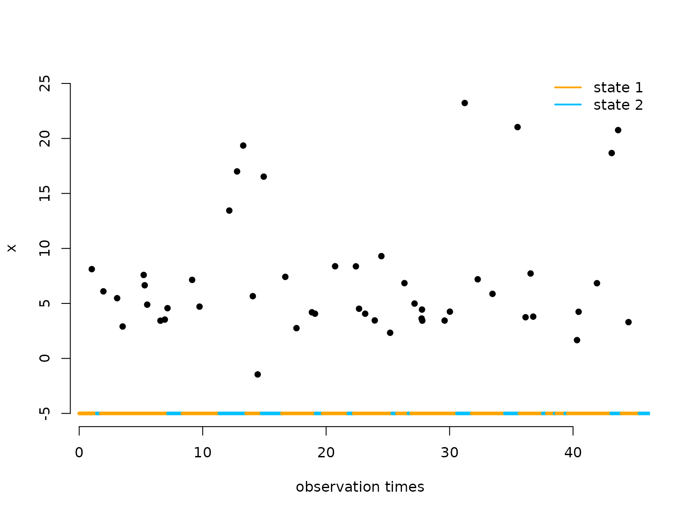

Continuous-time HMMs
Jan-Ole Koslik
Continuous_time_HMMs.RmdBefore diving into this vignette, we recommend reading the vignette Introduction to LaMa.
The regular HMM formulation needs a key assumption to be applicable, namely the data need to be observed at regular, equidistant time-points such that the transition probabilties can be interpreted meaningfully w.r.t. a specific time unit. If this is not the case, the model used should acocunt for this by building on a mathematical formulation in continuous time. The obvious choice here is to retain most of the HMM model formulation, but replace the unobserved discrete-time Markov chain with a continuous-time Markov chain. However, here it is important to note that the so-called snapshot property needs to be fulfilled, i.e. the observed process at time t can only depend on the state at that time instant and not on the interval since the previous observation. For more details see Glennie et al. (2023).
A continuous-time Markov chain is characterised by a so-called (infinitesimal) generator matrix Q = \begin{pmatrix} q_{11} & q_{12} & \cdots & q_{1N} \\ q_{21} & q_{22} & \cdots & q_{2N} \\ \vdots & \vdots & \ddots & \vdots \\ q_{N1} & q_{N2} & \cdots & q_{NN} \\ \end{pmatrix}, where the diagonal entries are q_{ii} = - \sum_{j \neq i} q_{ij}, q_{ij} \geq 0 for i \neq j. This matrix can be interpreted as the derivative of the transition probability matrix and completely describes the dynamics of the state process. The time-spent in a state i is exponentially distributed with rate -q_{ii} and conditional on leaving the state, the probability to transition to a state j \neq i is \omega_{ij} = q_{ij} / -q_{ii}. For a more detailed introduction see Dobrow (2016) (pp. 265 f.). For observation times t_1 and t_2, we can then obtain the transition probability matrix between these points via the identity \Gamma(t_1, t_2) = \exp(Q (t_2 - t_1)), where \exp() is the matrix expoential. This follows from the so-called Kolmogorov forward equations, but for more details see Dobrow (2016).
Example 1: two states
Setting parameters for simulation
We start by setting parameters to simulate data. In this example, state 1 has a smaller rate and the state dwell time in state one follows and Exp(0.5) distribution, i.e. it exhibits longer dwell times than state 2 with rate 1.
Simulating data
We simulate the continuous-time Markov chain by drawing the exponentially distributed state dwell-times. Within a stay, we can assume whatever structure we like for the observation times, as these are not explicitly modeled. Here we choose to generate them by a Poisson process with rate \lambda=1, but this choice is arbitrary. For more details on Poisson point processes, see the MM(M)PP vignette.
set.seed(123)
k = 200 # number of state switches
trans_times = s = rep(NA, k) # time points where the chain transitions
s[1] = sample(1:2, 1) # initial distribuion c(0.5, 0.5)
# exponentially distributed waiting times
trans_times[1] = rexp(1, -Q[s[1],s[1]])
n_arrivals = rpois(1, trans_times[1])
obs_times = sort(runif(n_arrivals, 0, trans_times[1]))
x = rnorm(n_arrivals, mu[s[1]], sigma[s[1]])
for(t in 2:k){
s[t] = c(1,2)[-s[t-1]] # for 2-states, always a state swith when transitioning
# exponentially distributed waiting times
trans_times[t] = trans_times[t-1] + rexp(1, -Q[s[t], s[t]])
n_arrivals = rpois(1, trans_times[t]-trans_times[t-1])
obs_times = c(obs_times,
sort(runif(n_arrivals, trans_times[t-1], trans_times[t])))
x = c(x, rnorm(n_arrivals, mu[s[t]], sigma[s[t]]))
}Let’s visualise the simulated continuous-time HMM:
color = c("orange", "deepskyblue")
n = length(obs_times)
plot(obs_times[1:50], x[1:50], pch = 16, bty = "n", xlab = "observation times",
ylab = "x", ylim = c(-5,25))
segments(x0 = c(0,trans_times[1:48]), x1 = trans_times[1:49],
y0 = rep(-5,50), y1 = rep(-5,50), col = color[s[1:49]], lwd = 4)
legend("topright", lwd = 2, col = color,
legend = c("state 1", "state 2"), box.lwd = 0)
Writing the negative log-likelihood function
The likelhood of a continuous-time HMM for observations x_{t_1}, \dots, x_{t_T} at irregular time
points t_1, \dots, t_T has the exact
same structure as the regular HMM likelihood:
L(\theta) = \delta^{(1)} \Gamma(t_1, t_2) P(x_{t_2}) \Gamma(t_2, t_3)
P(x_{t_3}) \dots \Gamma(t_{T-1}, t_T) P(x_{t_T}) 1^t,
where \delta^{(1)}, P and 1^t
are as usual and \Gamma(t_k, t_{k+1})
is computed as explained above. Thus we can fit such models using the
standard implementation of the general forward algorithm
forward_g() with time-varying transition probability
matrices. We can use the generator() function to compute
the infinitesimal generator matrix from an unconstrained parameter
vector and tpm_cont() to compute all matrix
exponentials.
nll = function(par, timediff, x, N){
mu = par[1:N]
sigma = exp(par[N+1:N])
Q = generator(par[2*N+1:(N*(N-1))]) # generator matrix
Pi = stationary_cont(Q) # stationary dist of CT Markov chain
Qube = tpm_cont(Q, timediff) # this computes exp(Q*timediff)
allprobs = matrix(1, nrow = length(x), ncol = N)
ind = which(!is.na(x))
for(j in 1:N){
allprobs[ind,j] = dnorm(x[ind], mu[j], sigma[j])
}
-forward_g(Pi, Qube, allprobs)
}Example 2: three states
Simulating data
The simulation is very similar but we now also have to draw which state to transition to, as explained in the beginning.
set.seed(123)
k = 200 # number of state switches
trans_times = s = rep(NA, k) # time points where the chain transitions
s[1] = sample(1:3, 1) # uniform initial distribuion
# exponentially distributed waiting times
trans_times[1] = rexp(1, -Q[s[1],s[1]])
n_arrivals = rpois(1, trans_times[1])
obs_times = sort(runif(n_arrivals, 0, trans_times[1]))
x = rnorm(n_arrivals, mu[s[1]], sigma[s[1]])
for(t in 2:k){
# off-diagonal elements of the s[t-1] row of Q divided by the diagonal element
# give the probabilites of the next state
s[t] = sample(c(1:3)[-s[t-1]], 1, prob = Q[s[t-1],-s[t-1]]/-Q[s[t-1],s[t-1]])
# exponentially distributed waiting times
trans_times[t] = trans_times[t-1] + rexp(1, -Q[s[t], s[t]])
n_arrivals = rpois(1, trans_times[t]-trans_times[t-1])
obs_times = c(obs_times,
sort(runif(n_arrivals, trans_times[t-1], trans_times[t])))
x = c(x, rnorm(n_arrivals, mu[s[t]], sigma[s[t]]))
}Fitting a 3-state continuous-time HMM to the data
par = c(mu = c(5, 10, 25), # state-dependent means
logsigma = c(log(2), log(2), log(6)), # state-dependent sds
qs = rep(0, 6)) # off-diagonals of Q
timediff = diff(obs_times)
system.time(
mod2 <- nlm(nll, par, timediff = timediff, x = x, N = 3, stepmax = 10)
)
#> user system elapsed
#> 2.364 3.209 1.902
# without restricting stepmax, we run into numerical problemsResults
N = 3
# mu
round(mod2$estimate[1:N],2)
#> [1] 4.90 15.45 29.10
# sigma
round(exp(mod2$estimate[N+1:N]),2)
#> [1] 1.80 2.58 5.06
Q = generator(mod2$estimate[2*N+1:(N*(N-1))])
round(Q, 3)
#> S1 S2 S3
#> S1 -0.888 0.565 0.323
#> S2 2.821 -3.469 0.647
#> S3 0.000 0.770 -0.770Continue reading with Markov-modulated Poisson processes.